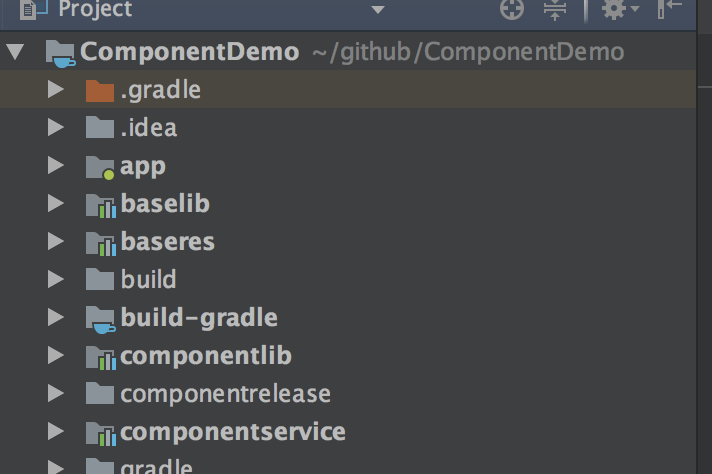
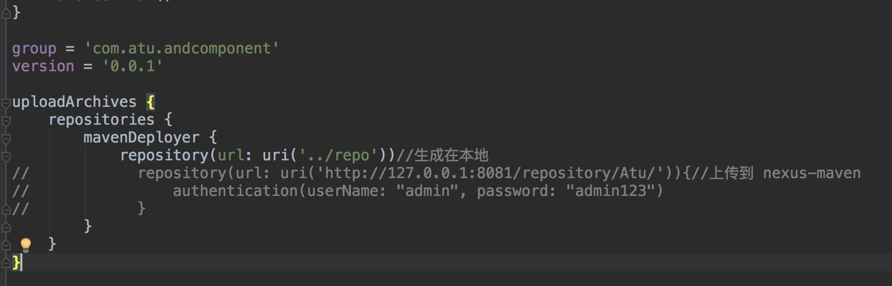
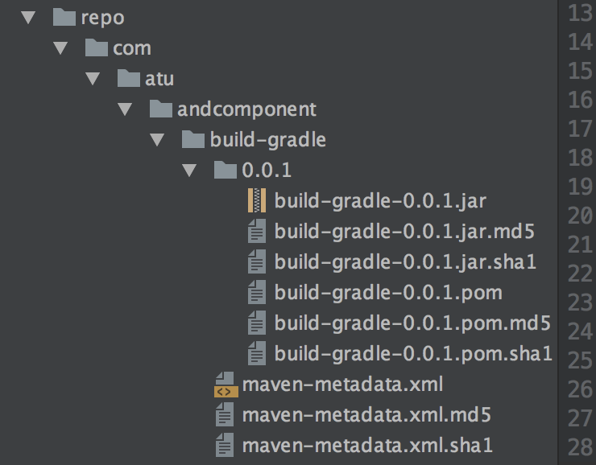
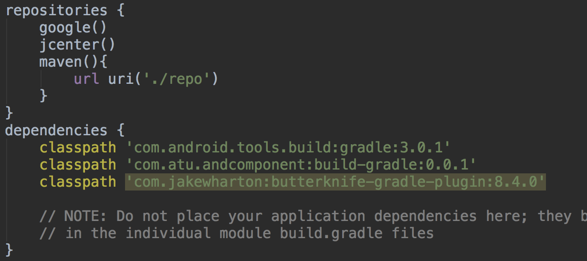
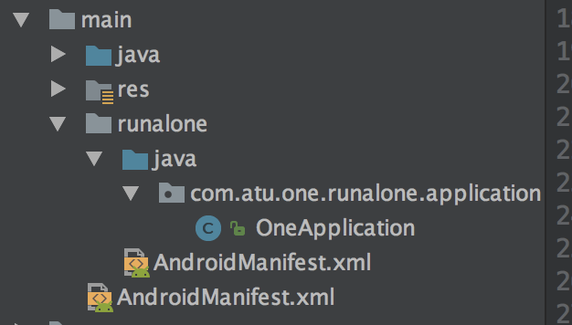

DDC 项目地址：DDComponentForAndroid
博客：Android彻底组件化方案实践
1. 组件化的意义
随着项目的发展，代码越来越臃肿，多人开发管理趋于复杂化。再加之版本定制化增多，业务模块管理不合理。借助模块化将项目分而治之，降低耦合，在定制业务方面，可以按需打包，减少无关业务的代码占用。
DDComponentForAndroid 组件化作者着重解决：代码解耦、组件单独调试、数据传递、UI跳转、生命周期、集成调试、代码隔离。（详见作者博客）
2. 实践
2.1 新建项目
新建 ComponentDemo 项目，添加库：baselib、baseres、componentlib、componentservice。如图所以：

- baselib 基础代码，公共代码，工具类
- baseres 公共资源、theme、baseapplication
- componentlib 路由框架
- componentservice 组件服务
依赖关系：
2.2 build-gradle 插件
这个插件是组件化的核心，会自动判断apply com.android.library还是com.android.application。可以将此插件发布的 maven 库中再引用。
首先利用 ./gradlew uploadArchives 命令生成对应的 jar 文件提供给 build.gradle 使用



2.3 修改配置
- 在根目录的 gradle.properties 中添加：
1
| mainmodulename=app //插件标识为主项目
|
- 在 app 的 gradle.properties 中添加：
1 2 3
| isRunAlone=true //标识是否需要单独调试 debugComponent=onecmodule,secondemodule//调试下用于引用组件库 compileComponent=com.atu.onemodule:onemodule,secondmodule //集成测试用于引用组件aar文件（包名+组件名）和库 或maven 库
|
- 在 app 的 build.gradle 中修改：apply plugin: ‘com.android.application’ 为 apply plugin: ‘com.dd.comgradle’ 让插件管理 application 或 library。接着添加：
1 2 3 4
| combuild { applicationName = 'com.atu.componentdemo.app.MainApplication' isRegisterCompoAuto = true //告知插件加载方式 }
|
2.4 业务模块
新增两个模块 onemodule 和 secondemodule
1
| isRunAlone=true //标识是否需要单独调试
|
- 在 module 的 build.gradle 中修改：apply plugin: ‘com.android.library’ 为 apply plugin: ‘com.dd.comgradle’ 让插件管理 application 或 library。
- 在 main 目录下配置 runalone 文件

- 在 module 的 build.gradle 中添加：
1 2 3 4 5 6 7
| resourcePrefix "one_" //避免资源重名 ... combuild { applicationName = 'com.atu.one.runalone.application.OneApplication' isRegisterCompoAuto = true //告知插件加载方式 }
|
2.6 路由
在 oneapplike 添加和移除 服务
1 2 3 4 5 6 7 8 9 10 11 12 13 14
| public class OneAppLike implements IApplicationLike{ Router router = Router.getInstance(); @Override public void onCreate() { router.addService(OneModuleService.class.getSimpleName(),new OneServiceImpl()); } @Override public void onStop() { router.removeService(OneModuleService.class.getSimpleName()); } }
|
在 componentService 中定义服务
1 2 3 4
| public interface OneModuleService { Fragment getOneModuleFragment(); }
|
在 OenModule 提供具体实现类
1 2 3 4 5 6
| public class OneServiceImpl implements OneModuleService { @Override public Fragment getOneModuleFragment() { return new OneFragment(); } }
|
Router 中注册
1 2 3 4 5 6 7 8 9 10 11 12 13 14
| public class OneAppLike implements IApplicationLike{ Router router = Router.getInstance(); @Override public void onCreate() { router.addService(OneModuleService.class.getSimpleName(),new OneServiceImpl()); } @Override public void onStop() { router.removeService(OneModuleService.class.getSimpleName()); } }
|
获取服务
1 2 3 4 5 6 7
| Router router = Router.getInstance(); if (router.getService(OneModuleService.class.getSimpleName()) != null) { OneModuleService service = (OneModuleService) router.getService(OneModuleService.class.getSimpleName()); fragment = service.getOneModuleFragment(); ft = getSupportFragmentManager().beginTransaction(); ft.add(R.id.fl_main_content, fragment).commitAllowingStateLoss(); }
|
在 secondmodule 中用实现 IComponentRouter 的SecondUIRouter 声明处理的短链。
在 secondapplike 中注册和注销 UIRouter
1 2 3 4 5 6 7 8 9 10 11 12 13 14
| public class SecondAppLike implements IApplicationLike{ UIRouter uiRouter = UIRouter.getInstance(); SecondUIRouter secondUIRouter = SecondUIRouter.getInstance(); @Override public void onCreate() { uiRouter.registerUI(secondUIRouter); } @Override public void onStop() { uiRouter.unregisterUI(secondUIRouter); } }
|
2.7 上传 aar 到 maven 库
在组件的 gradle 的 assembleRelease 下自动利用插件生成对应的 arr 文件，位于 componentrelease 文件下。
在根目录下添加，nexus_maven.gradle 文件:
1 2 3 4 5 6 7 8 9 10 11 12 13 14 15 16 17 18 19 20 21 22 23 24 25 26 27 28 29 30 31 32 33 34 35 36 37 38 39 40 41 42 43 44 45 46
| apply plugin: 'maven' apply plugin: 'signing' configurations { deployerJars } repositories { mavenCentral() } // 判断版本是Release or Snapshots def isReleaseBuild() { return !VERSION.contains("SNAPSHOT"); } // 获取仓库url def getRepositoryUrl() { return isReleaseBuild() ? RELEASE_URL : SNAPSHOT_URL; } uploadArchives { repositories { mavenDeployer { beforeDeployment { MavenDeployment deployment -> signing.signPom(deployment) } pom.version = VERSION pom.artifactId = ARTIFACT_ID pom.groupId = GROUP_ID pom.packaging = PACKAGING repository(url: getRepositoryUrl()) { authentication(userName: NAME, password: PASSWORD) // maven授权信息 } } } } // 进行数字签名 signing { // 当 发布版本 & 存在"uploadArchives"任务时，才执行 required { isReleaseBuild() && gradle.taskGraph.hasTask("uploadArchives") } sign configurations.archives }
|
在 Module 的 gradle.properties 添加上传 maven 库的版本信息等：
1 2 3 4 5 6 7 8 9 10
| VERSION=1.0.0 GROUP_ID=com.atu ARTIFACT_ID=onemodule PACKAGING = aar RELEASE_URL=http://127.0.0.1:8081/repository/Atu/ SNAPSHOT_URL=http://127.0.0.1:8081/repository/Atu/ NAME=admin PASSWORD=admin123
|
利用命令 ./gradlew uploadArchives 上传到 maven库。
项目地址：ComponentDemo